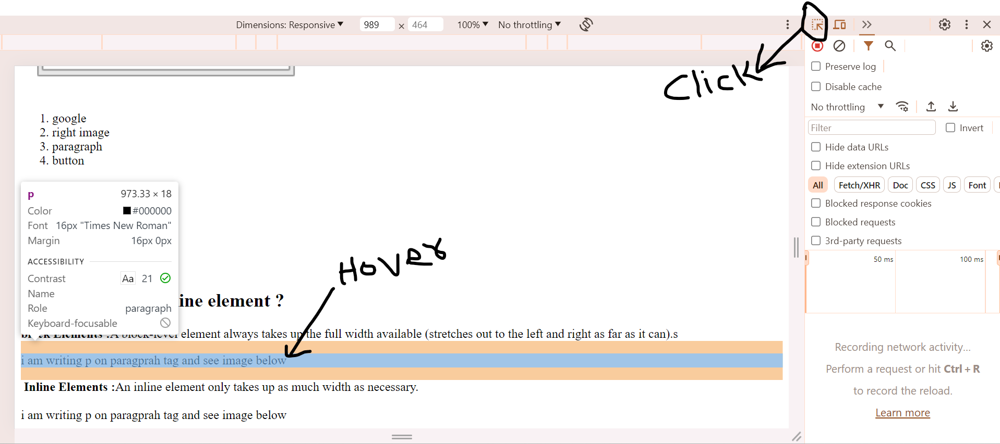

block Elements :A block-level element always takes up the full width available (stretches out to the left and right as far as it can).s
i am writing p on paragprah tag and see image below
 Inline Elements :An inline element only takes up as much width as necessary.